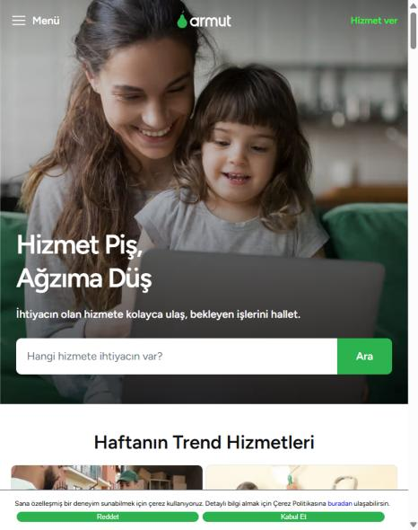
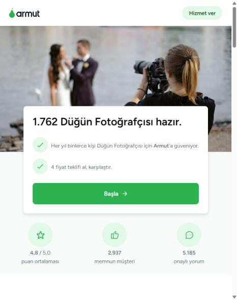
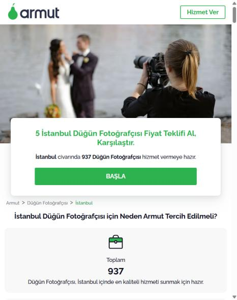
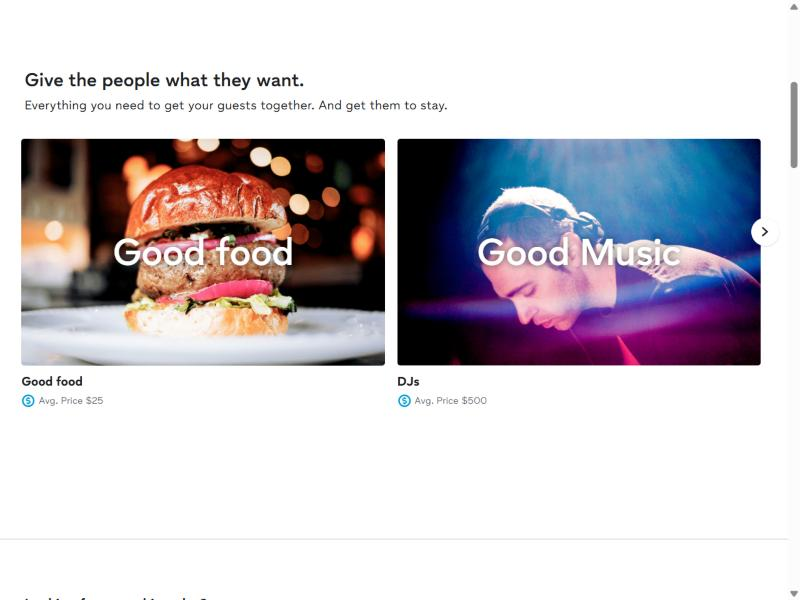
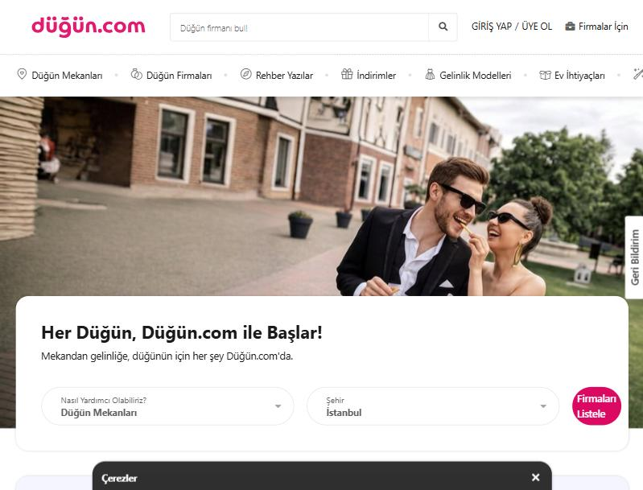
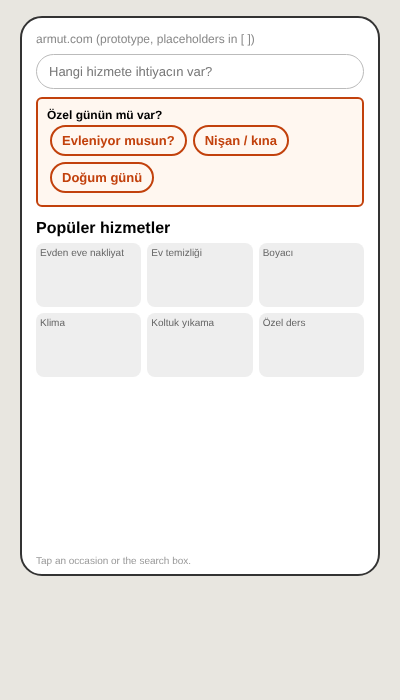
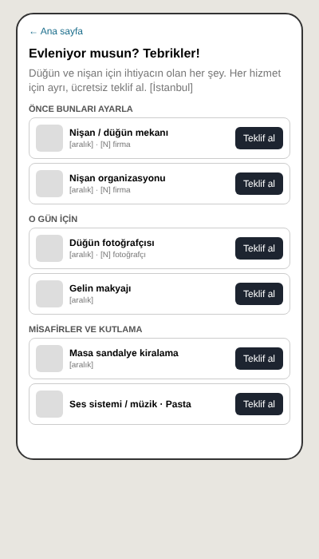
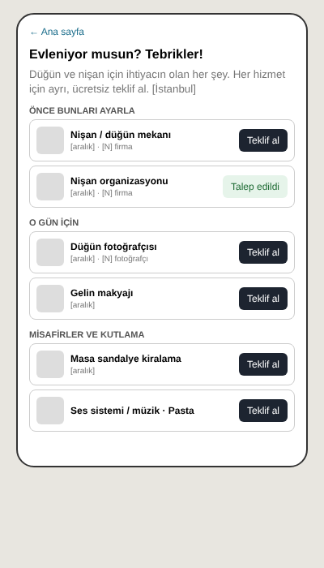

APM case study · Armut / ProntoPro · November 2026
An occasion entry that groups existing services and sends each one into today's request flow.
Ahmet Tunay Çelik
3 sites (Armut, ProntoPro, Homerun) × 3 entry points from the brief
Real wedding-photographer requests to the end; 2 real quotes back
Public price pages with real past requests
Pro pages with yearly request counts
Benchmarks: Thumbtack, Düğün.com, The Knot, Getir
Claude agents: researchers, event & supply experts, engineer, analyst, UX, fact checker, red-team critic, review panel
I set direction and constraints and chose the solution
Numbers are public-page estimates or small samples. Time above the 2-3 h guide, mostly verification and waiting for real quotes. AI transcript shared.
Goal: more requests in event services (wedding photographer, birthday cake, bridal make-up and similar).
Team: 1 backend, 1 frontend, 1 UX designer.
My constraint: no change to the shared request flow or pricing (range shown, pro sets the price). Both affect every category, so solutions are event-specific layers on top.
Scope: Armut (TR), ProntoPro (IT), Homerun (UK) share flow and templates: one build, three markets.
0 of 36
services on Armut's homepage lists are event services. The search box's suggestions show moving, painting, cleaning.
Typed search works: "kına" → Kına Organizasyon, Kına Mekanları.
ProntoPro shows one event service in trending. Homerun none.

Campaign page: one "Başla" button, no price, no pro work, masked review names.
Local list: profiles from 2015-2017, off-topic bios.
Same template on all three sites.
Event buyers come from Instagram, where they see portfolios.


44%
of nişan organization requests also mention tables and chairs (music 19%). Birthday organization: tables 21%, clown 17%. Cake: 6-8%.
No site groups services by occasion. After a request, nobody suggests the next service.
Armut price-page samples (Armut chooses which ones are shown)
~0.5%
wedding photographer requests vs marriages (2,947 / ~552k)
~1.8%
(3,321 / ~180k). Catering 19,300 and DJ 5,717 vs moving 7,832
Armut: ~108k event customers a year, mostly small, home-hosted and near-date (civil ceremony, kına, "Mi sposerò questo venerdì!").
Supply is not the limit: ~937 Istanbul photographers, ~1-2 requests each a year.
Event services are invisible on our own surfaces, and they are sold one by one while customers think in occasions.
How might we let someone planning an occasion see everything they need in one place, without changing the request flow?
| Option | Score /25 | Decision |
|---|---|---|
| After-request "what happens next" + next-service card | 22 | Runs alongside (only reaches people who already asked) |
| Occasion entry + grouped occasion page | 21 | Main bet: the only option that reaches new event demand |
| Campaign headline copy test | 20 | Cheap side test |
| SEO price and local page upgrade | 19 | Next |
| "Found on Armut/ProntoPro" creator program | 12 | Later, with marketing |
Dropped: price or work before the request, changes to the flow, event messages to cleaning/moving customers (0 of 315 mention events).
Grocery recipes (Migros "Ne pişirsem?", Instacart shoppable recipes; Getir tried a similar idea): everything for one dinner on one page.
Thumbtack Events, Düğün.com, The Knot, Bridebook: services grouped by occasion, one quote per service.
No service site has a "request all" button: each service has its own quotes, pros and timing.


Tiles: "Evleniyor musun?", "Nişan / kına", "Doğum günü" (IT "Ti sposi?", UK "Getting married?")
"Özel günler" block in the suggestions
"Bu gün için diğer hizmetler" block
"Nişanın için diğer hizmetler" link
Occasion page: grouped services, price range and pro count already on the site, one "Teklif al" per service into its existing flow, "Talep edildi" on services already requested. No basket.
Clickable mobile prototype: homepage tile → occasion page → existing request flow → after-request screen.
Design options: A grouped page (chosen); B checklist ticks, closest to Getir (later: 3 ticks = 3 full flows); C timeline (later: most requests are near-date).
Open deck/prototype.html · wireframe/occasion-hub-designs.html



| Event funnel by entry point and market | Product analytics |
| How often event words are searched | Search logs, Search Console |
| Co-need across all requests | Request data, then the after-request card |
| Event requests with 0 quotes in 48 h, by city | Marketplace data (where to launch) |
| Seasonality | Requests by month |
| Why buyers choose Instagram or leave | 8-10 customer interviews |
| Do pros want more requests at this fee? | Pro survey, quote rates |
Where: İstanbul, Ankara, İzmir + one Italian city, only where pros answer within 48 h; before wedding season.
Arms: control / tile → occasion page / tile → search block. 4 weeks.
Primary: submitted event requests per visitor
Quality: event requests with 1+ quote in 48 h
Guardrail: total requests per visitor (+ long-term holdout)
Kill rule: 0-quote share > control + 5 pts
Sizing, not forecast: roughly 1-2 thousand extra event requests a year per market. The test decides.
Appendix: assumptions, data, platform evidence, AI transcript
Event demand is real (~108k event customers a year on Armut, 17-44% of organization requests ask for a second service) but our homepage, search and listings never show it.
I would test one occasion entry that groups existing services and sends each one into today's request flow.
Built for a team of three, in weeks, for all markets.